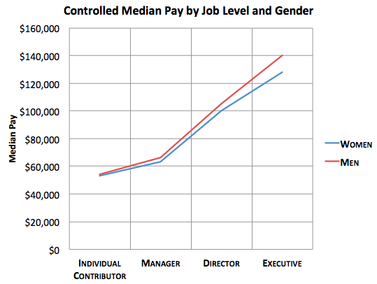
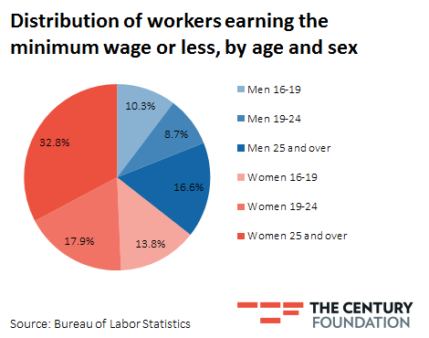
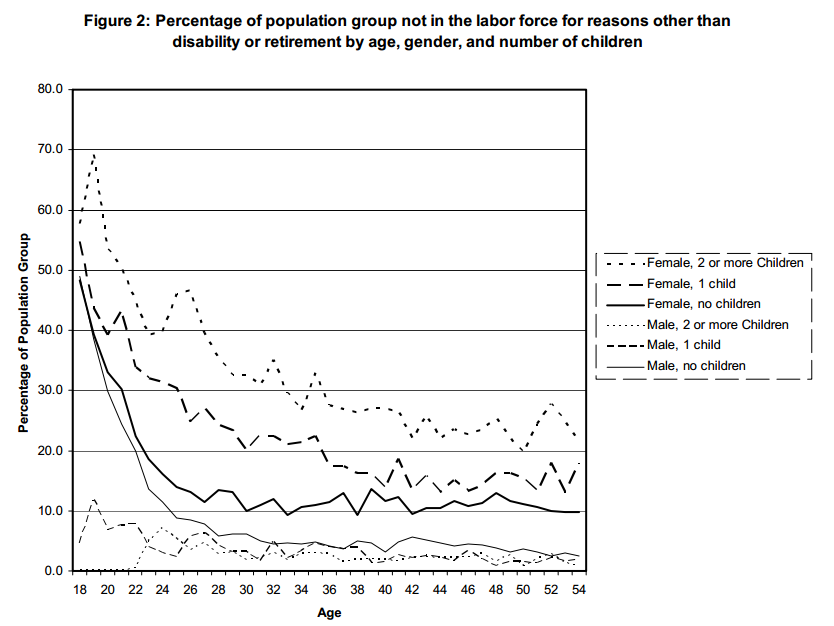

Arguments For Discrimination
There is a gender pay gap and the cause for this gap is discrimination against women.
- Women make somewhere between $0.65 and $0.76 per $1.00 men make (depending on source).
- Women are about twice as likely as men to say they had been discriminated against at work because of their gender (18% vs. 10%).
- Greater education has not been shown to improve a woman’s overall earnings in comparison of men’s pay with similar education.
- Women are paid only 82 percent of what their male peers are earning just a year after college graduation. Ten years out of college, the gap widens with women earning a mere 69 percent of what men earn (varying with source).
- In the past decade very little has been done politically to increase gender integration in the work place. Ex: Republicans pushing back Paycheck fairness act.
- Pay Gap widened from 2005-2008 and 2011-2012
- Biggest gap in the highest paying fields: Female doctors earn 71% of what male doctors do
Pay Gap By Profession

Pay Gap By State


Arguments Against Discrimination
There is a gender pay gap, but this is due to women’s personal preference to select lower paying jobs, take longer leaves of absences, and work at lower paying but more “family friendly” work environments.
- Pay gaps within fields are also accounted when considering gender bias in the selection of different concentrations which pay different amounts.
- If women were able to be paid only $0.77 for every $1.00 a man is paid, businesses would be inclined to hire only women to save money. The fact that this is not the case illustrates that the pay gap does not exist in equal work.
- Women typically earn less than men when they give birth to children, as many more women stay home to care for their children than men do.
Pay Gap By Job Level

Distribution of Minimum Wage Workers


Our Opinion
There is a gender pay gap, but when controlling for certain variables such as preference of job type between men and women, the pay gap is much smaller than many may claim.
- According to the Dept. of Labor report on the gender gap, when controlling for variables such as percent of people who work part time, percent of people who leave the workforce due to childbirth, and extra value placed on “family friendly” workplaces, the wage gap is between 4.8 and 7.1 percent.
- Men generally take jobs that are in high paying fields and even in high paying fields, for example the medical field, there are more men in higher medical positions like heart surgeons than women and more women are in lower paying jobs like pediatrics.
- Women business owners make less than half of what male business owners make. There is little no proof of whether discrimination is a major factor as well as the fact that women own the business and are rarely discriminated against by consumers.
- Unmarried women who do not have a child make more on average than unmarried men without a child do
Median Earnings By Gender and Education

Population Voluntarily Out of Work

Works Cited
“America’s Gender Wage Gap.” The Economist Online. The Economist Newspaper, 17 April 2014. Web . 11 Dec. 2014. Casserly, Meghan. Gender Pay Gap: How Do Women's Earnings Stack Up? Digital image. Forbes.com. Forbes, 19 Sept. 2013. Web. 17 Dec. 2014. Controlled Median Pay by Job Level and Gender. Digital image.Theatlantic.com. The Atlantic, 30 May 2013. Web. 17 Dec. 2014. Covert, Bryce. "The Gender Wage Gap Is Ugly. So Is the Right-Wing Effort to Deny It." New Republic. New Republic, n.d. Web. 15 Dec. 2014. Feldman, Marcus. Weekly Earnings of Full-Time Workers, by Gender and Education, 2010. Digital image. Mediamatters.org. Media Matters for America, 30 Apr. 2012. Web. 17 Dec. 2014. Godfrey, Neale. “Gender Pay Gap: How Far Women Have Come. HuffingtonPost.com. The Huffington Post, 15 March 2013. Web. 15 Dec. 2014. Labaton, Vivien. “Five Myths About the Gender Pay Gap.” The Washington Post Online. The Washington Post, 25 July 2014. Web. 11 Dec. 2014. Landy, Benjamin. Why Democrats Want to Rebrand the Minimum Wage as a Women’s Issue. Digital image. Tcf.org. The Century Foundation, 18 June 2013. Web. 17 Dec. 2014. Lukas, Carrie. “There is No Male-Female Wage Gap.” The Wall Street Journal Online. The Wall Street Journal, April 12, 2011. Web. 11 December 2014. Man and Woman Balancing. Digital image. Shriverreport.com. The Shriver Report, Jan. 2014. Web. 17 Dec. 2014. Man and Women Representing Gender Pay Gap. Digital image.Thenewpolitical.com. Ohio University, 10 Sept. 2011. Web. 15 Dec. 2014. Patten, Eileen. “On Equal Pay, Key Factors About the Gender Pay Gap.” Fact Tank: News in the Numbers. Pew Research Paper, 8 April 2014. Web. 11 Dec. 2014. “Pay Equity and Discrimination.” IWPR.org. Institute For Women’s Policy Research, 10 February 2013. Web. 15 Dec. 2014. Sommer’s, Christina. “5 Feminist Myths That Will Not Die.” Time Magazine Online. Time Magazine, 2 September 2014. Web. 11 Dec. 2014. Than, Cynthia. "There Is No Gender Gap in Tech Salaries." Quartz. Quartz News, n.d. Web. 16 Dec. 2014. Tobak, Steve. “The Gender Pay Gap is a Complete Myth.” CBSNews.com. CBS News , 17 April 2011. Web. 11 Dec. 2014. United States. Department of Labor. An Analysis of Reasons for the Disparity in Wages Between Men and Women, 12 January 2009. Web. 11 Dec. 2014. Vagianos, Alanna. "The Gender Pay Gap Is Alive And Well In All 50 States, Shows Study." The Huffington Post. TheHuffingtonPost.com, 13 Mar. 2014. Web. 12 Dec. 2014. Woman Pay. Digital image. Workplacerantings.com. ESCO Corporation, 5 Feb. 2013. Web. 17 Dec. 2014. Women's earnings and employment by industry. Bureau of Labor Statistics, 2009. Digital Image. Web. 17 Dec. 2014.